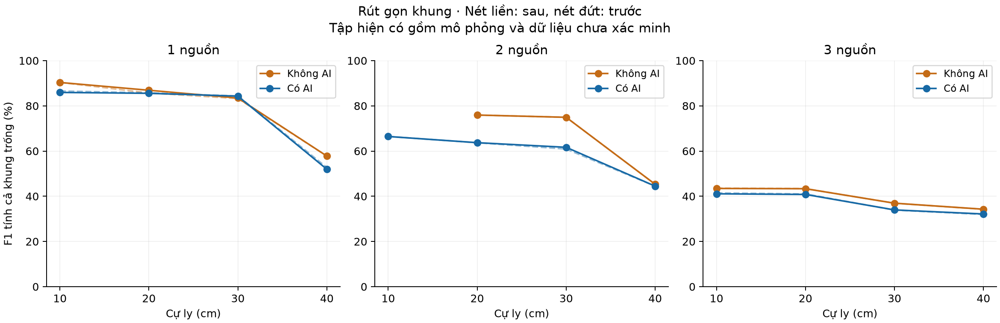

Chỉ số sau rút gọn
P/R/F1 gộp từ số đếm, ghép một–một trong 15°. R toàn khung bao gồm khung trống; R có hướng là chỉ số có điều kiện. MAE chỉ tính cặp TP.
Mức thay đổi so với tập đầy đủ
Các tỷ lệ dưới đây là chênh lệch theo điểm phần trăm; MAE theo độ. Đây là ảnh hưởng của rút mẫu, không phải thay đổi thuật toán.

Bảng 5.2 · Không AI
Các bảng mô tả tập hỗn hợp đã rút gọn, cần ghi rõ thành phần nguồn và điều kiện khi đưa vào bài.
Bảng 5.3 · Có AI
Phương pháp và giới hạn
- 19 nhóm vượt 40.000 khung được rút về 35.000. Bốn nhóm nhỏ giữ nguyên số khung; nhóm hai nguồn Không AI tại 10 cm vẫn chưa có dữ liệu. Không tạo khung để đạt chỉ tiêu.
- Chia hạn mức tỷ lệ theo tổng khung gốc của từng bố trí góc × hồ sơ nguồn × nhóm thu. Mỗi tầng không rỗng giữ ít nhất một khung. Thứ tự file và vị trí đoạn lấy được xác định bằng SHA-256 với seed 20261016, trước khi đánh giá chỉ số.
- Giữ các file đầy đủ theo thứ tự đã chọn, sau đó lấy một đoạn liên tiếp trong file cuối nếu cần. Quy tắc không xem góc đo, lỗi, TP/FP, khung trống hay mức lặp khi chọn. Tất cả bố trí góc hiện có được giữ.
- Góc, số hướng, góc mục tiêu, cự ly và các cột sai số của từng khung được giữ nguyên. Chỉ đánh lại sample từ 1 cho file bị cắt để tương thích chương trình đọc; JSON ghi checksum và khoảng dòng trong bản gốc để truy ngược.
- Các đầu vào mô phỏng AI/Không AI dùng cùng quy tắc xếp file và điểm bắt đầu khi có cùng nguồn chung. Nếu hạn mức khác nhau, các đoạn cùng file có phần đầu trùng nhau; không xem hai tập con là các phép đo phần cứng độc lập.
- Chỉ số có thể thay đổi do chọn ít file và khung hơn. Không chạy lại seed để tìm kết quả tốt hơn. Không tái sử dụng khoảng tin cậy hoặc p-value cũ cho tập đã rút gọn; độ bất định cần được ước lượng trên tập mới khi dùng suy luận thống kê.
- Tập rút gọn không đáp ứng mặc nhiên quy trình 1.000 khung × ba lần đo mỗi cấu hình. Với hai nguồn AI có 630 bố trí mỗi cự ly, hạn mức 35.000 chỉ cho trung bình khoảng 56 khung/bố trí; cần ghi đúng quy mô này trong bài.
- Nguồn gốc dữ liệu được giữ trong JSON bên ngoài CSV. Rút gọn không thay mô phỏng thành kết quả thực nghiệm; các hạn chế về nhiễu, thời lượng thu, phiên bản firmware và đối chứng trong báo cáo trước vẫn còn.
- Bản gốc đầy đủ được giữ trong thư mục sao lưu. Thời điểm sửa của file bị cắt là lúc xử lý tập con, không phải thời điểm thu; không sửa dấu thời gian để mô phỏng thời gian đo.
Bản đầy đủ: Thư mục đối chứng. Phân tích trước rút gọn: Đánh giá toàn bộ và độ sẵn sàng của bài.